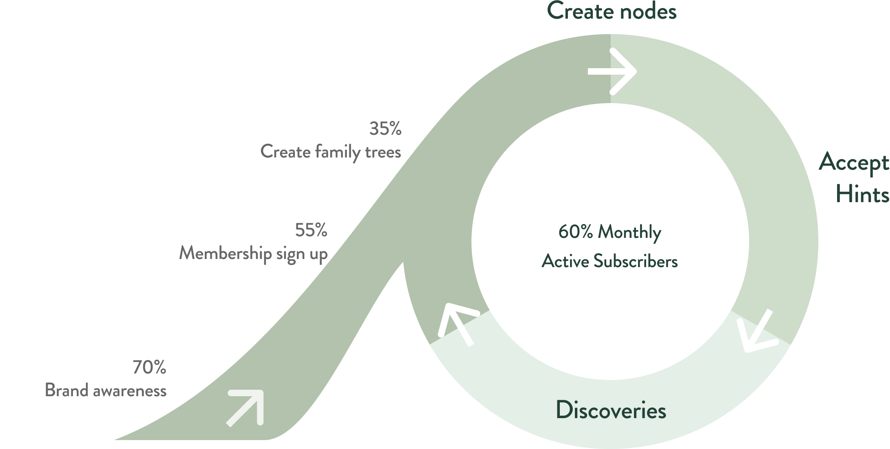
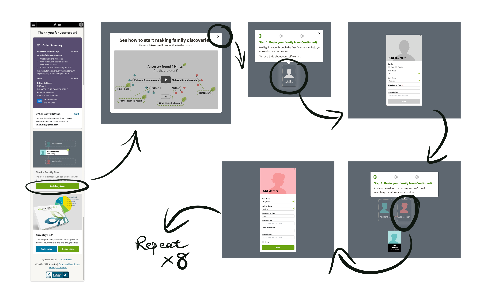
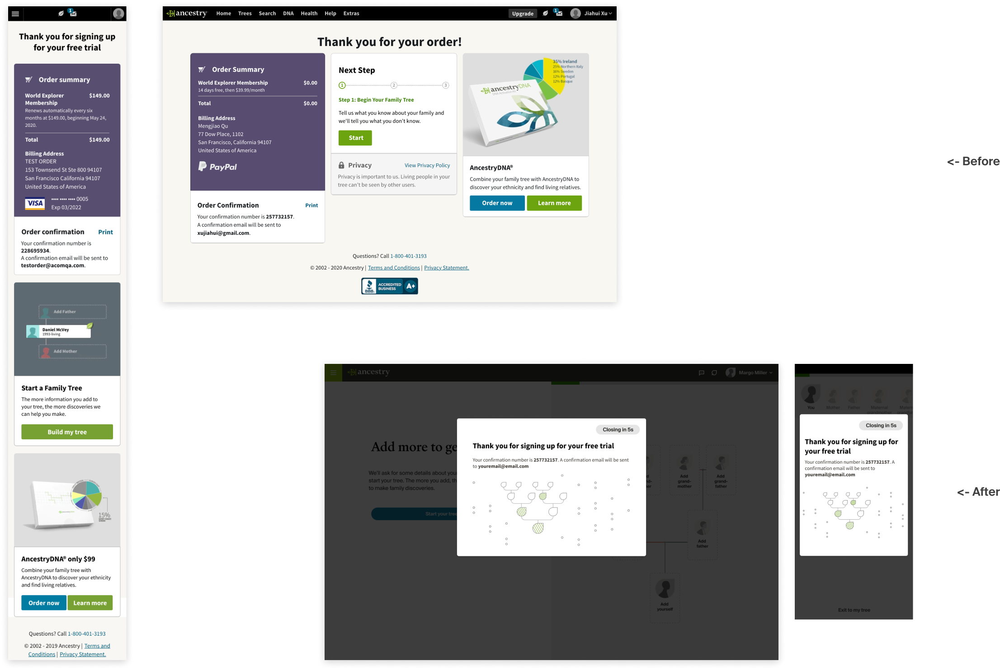
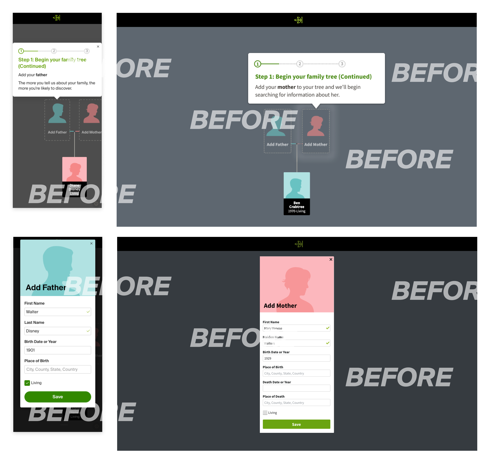
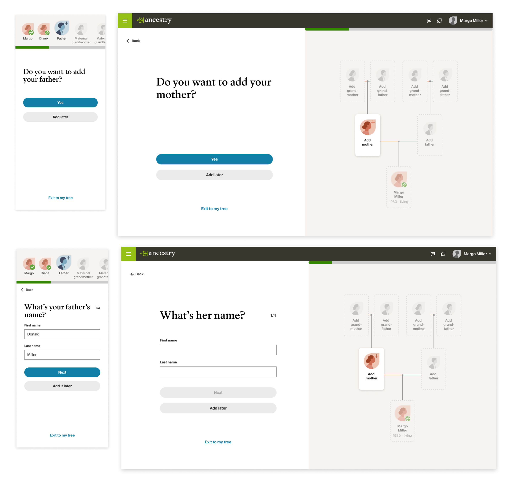

Role: Lead Product Designer | Device: Mobile & Desktop Web | Duration: 3 Months
Building a family tree is the first step of Ancestry's user engagement flywheel. The more Nodes (family members) customers add to their trees, the more Hints (records matching with family members' information) we can generate for them, and the more discoveries and engagement on our sites.
Pic. 1 Family History Product Onboarding Flywheels 2021
Only 69.30% of users started family trees and created nodes after checkout. All the key metrics (bill through rate, active discovery rate, 3-day citation rate, etc.) were the lowest among users without a family tree or less than eight nodes. Users ended up canceling the memberships without experiencing the product's actual value.
Pic. 2 Screenshots of the product in 2021
By priming users with the value of building a family tree up front, reducing the friction of adding family members and their information, and bringing delight and encouragement in between adding nodes, users will be more likely to start family trees and add more nodes.
We run the following tests to improve the key metrics and user experience:
Pic. 3 Screens of the guided tree builder redesign
Confirmation page test showed statistically significant results on:
GTB redesign showed statistically significant results on:
Value prop showed statistically significant results on:
We rolled out the design after testing positive and were able to iterate more tests on top of this new flow because of the flexibility and modular structure.
Our product strategy focuses on our Casual Customers, the group most critical to our growth. They are more likely to subscribe to our memberships when they experience the product's value. Our UX research team clustered three segments of users: Curious, Casual, and Core. After understanding their behavior and backgrounds, I devised the ocean analogy to profile these three user groups.
Pic. 4 Curious, Casual, Core user profiles. Photos by @jakobowens @khandro @sebaspenalambarri on Unsplash
Our Casual Customers are diverse in both in age and in ethnicity. Like Core, very interested in learning about ancestors and what their lives were like, but struggles with the existing experience. Family history competes with other things in their busy lives. May seem time consuming and expensive, so may dip in and out over their tenure.
It is essential to guide this group of users to make discoveries. Time-to-discovery is very crucial to the success of their experience. Reducing friction and generating discoveries for them is critical.
In Casual customers' voice:"I came to Ancestry to uncover mysteries, unknowns, even bombshells. I am open to anything that I might find or might arise out of this exploration. I have always felt incomplete and uncertain about who I am. I feel driven to uncover and understand things that have always felt unknown and difficult to know. Time is very important to me and I don't want to waste my time. I realize I have only just begun and that this is quite time consuming if you want to do it right."
Only 25% of customers clicked start tree CTA on the order confirmation page. Even though they can access GTB on homepage, we were losing the best entry point to start a tree. By getting rid of the order confirmation page and only showing a modal with a countdown for the confirmation, we can get users to start product experience without efforts.
Pic. 5 Order confirmation page before vs after
Only 37% of customers watched the intro video on the importance of starting a family tree. Those who watched had a higher bill-through rate after the trial period. Creating animations in a carousel allows us to provide critical information without watching a one-minute video.
Pic. 6 Educational video vs intro modal with animations
The previous Guided Tree Builder asked users to add people into the tree in a linear flow but required clicking on the tree nodes and filling forms in different views. Structuring the flow in a single view and removing clicking in and out of the tree view reduces friction. It also avoids cognitive overload and increases the completion rate by asking one question simultaneously.
Pic. 7 Previous Guided Tree Builder
Pic. 8 Guided Tree Builder Redesign